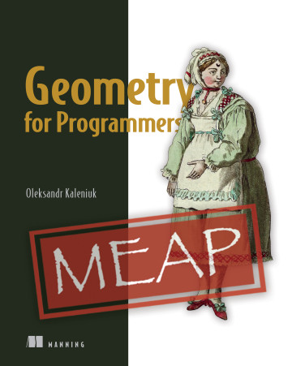

This is Words and Buttons Online — a collection of interactive #tutorials, #demos, and #quizzes about #mathematics, #algorithms and #programming.
Also, I'm currently writing a book called Geometry for Programmers for Manning. Not an advertisement, I'm just bragging.
Rational interpolation is a step forward from polynomial interpolation towards rational splines. With rational interpolation, you can build functions that run through a set of points and also have vertical asymptotes whenever you want. With this capability, you can now model functions like logarithms better.
#demos #mathematics
Either your estimates suck or your job does
This page uses polynomial modeling to show why software engineering tasks are often impossible to estimate.
#mathematics #programming
Complex numbers and conformal mapping
This explains the geometry of complex numbers. Explains conformal transformations, introduces analytic functions, and shows that analytic complex functions are conformal. And using the connection between the geometry and the analysis explains it all in just some five minutes.
#mathematics #tutorials
Lagrange polynomial as a gateway drug to basis splines
This explains Lagrange interpolation: what is the Lagrange polynomial, why does it run through all the points, what is the basis polynomial, and how come it's a polynomial in the first place.
#mathematics #tutorials
Trippy polynomials in arctangent scale
This shows the global properties of polynomials, their derivatives, and explains how the Maclaurine and Taylor series work all with animated plots in arctangent scale.
#mathematics #tutorials
Partial order and non-Boolean logic
Non-Boolean logics are rare but not extinct. Interval logic is one example. Sometimes, you can implement a logic you want within total order or partial order but sometimes even that isn't enough and you need an even more general relation. With operator overloading, you have the freedom to go there but you also have less assurance when working within the total order.
#mathematics #tutorials
Yet another alternative to floating-point numbers
This shows how computable intervals written in rational bounds may not only account for the input error but keep computational error under control as well.
#mathematics #programming #quizzes
Why is it ok to divide by 0.0?
This explains why dividing by zero in floating-point numbers is ok.
#mathematics #programming
Can we use lemniscates for ultra-cheap vector graphics?
This depicts an old idea of using multifocal lemniscates to draw arbitrary shapes. In some applications, this may be indeed an economical alternative to splines.
#demos #mathematics
An interactive explanation of how polynomial transformations such as trilinear or biquadratic or even linear-cubic work, and how to craft your own.
#demos #mathematics
Arctangent scale. It's like the logarithmic scale but infinite
An interactive demo of how, with arctangent used as a scale, we can show any function on a screen. And not just a fragment of it but the whole function.
#demos #mathematics
A simple image processing algorithm that cleans up dirt stains from old newspapers. I called it “darning” because of how it works.
#algorithms #demos #mathematics
Error codes are not numbers. But they are. Can we exploit that?
An interactive explanation of how we can use floating-point NaNs as error code holders in C++.
#demos #mathematics #programming
This generates honeycomb textures of a special quasi-irrational form. Explanation included.
#demos #mathematics
A pair of interactive mnemonics for sine and cosine. There are also examples of practical usage. Basically, the second half of a tutorial is about how the first half was made.
#mathematics #tutorials
SWInE: Simplicial Weight Interpolation and Extrapolation
An alternative to splines nobody knows about. The localization of Shepard's method for a simplicial complex.
#demos #mathematics
Quadratic splines are useful too
This explains simple quadratic splines, how to craft one yourself, and why.
#demos #mathematics
Circles and lines vs. polynomial splines
An alternative to polynomial splines. Smooth parametric curves made from arcs and line segments.
#demos #mathematics
An introduction into symbolic computations in Python. Don't worry, it's much simpler than it sounds. It's about making Python do your math for you with very little investment in the technology.
#mathematics #programming #tutorials
Yet another floating-point tutorial
Most of what you should know about floating-point numbers put together in an interactive tutorial with quests and puzzles.
#mathematics #programming #tutorials
Interactive mnemonics for dot and cross vector products
Just a pair of mnemonics for dot and cross vector products. They present the functions, show how they work, and why one is dot and the other is cross.
#mathematics #tutorials
This is an example of an image vectorization algorithm. It shows the bilinear interpolation, polynomial approximation, differential analysis, and iterative algorithms working together to solve a practical problem
#algorithms #demos #mathematics
The simplest possible smooth contouring algorithm
A 3-part smooth contouring algorithm that shows partial derivatives, gradients, and parametric polynomials working together.
#algorithms #demos #mathematics
Polynomial approximation and interpolation
This explains approximation and interpolation, how to use polynomials for that, and how to make both concepts work together.
#mathematics #tutorials
Interactive explanation of marching cubes and dual contouring
Marching cubes and dual contouring are often used for mesh generation. This explanation shows how they work, what are their differences, similarities, and limitations.
#algorithms #mathematics #tutorials
Programmer's guide to linear equations
This is an introduction to linear equation systems. It explains linear dependency, under- and over-specification, direct and iterative solvers. The guide should give you enough knowledge to find a proper solution for your task but not enough to implement one efficiently yourself.
#mathematics #tutorials
Estimating floating-point error the easy way
An explanation of how to measure computational error while working with floating-point numbers, and why.
#demos #mathematics #programming
NURBS stands for the non-uniform rational basis spline. There are three separate concepts. This guide walks you through these concepts one by one.
#mathematics #tutorials
How much math can you do in 10 lines of Python
An interactive introduction into concise Python / basic linear algebra.
#mathematics #programming
Programmer's guide to polynomials and splines
This is a brief introduction into polynomials. From how to make a polynomial run through your set of points to how to make it into a spline.
#mathematics #tutorials
Mathematical analysis explained with Python, blood, and TNT
A brief introduction to mathematical analysis with a little SymPy on the side. The page explains how to disassemble a function, and how to assemble it back from the derivatives.
#mathematics #tutorials
An interactive introduction to iterative algorithms
An interactive explanation of how iterative algorithms work. This explains convergence and the exit condition problem on an oversimplified linear system solver.
#algorithms #demos #mathematics
Interactive guide to homogeneous coordinates
This interactive guide shows how homogeneous coordinates actually make programming geometry simpler and not more complicated. The page explains the extra coordinate, matrices, and generalized transformations. Most of what you need to know about projective geometry as a practicing programmer is here.
#mathematics #tutorials
| All the source code for Words and Buttons is available on GitHub. | ||
| There is also RSS with all the news. | ||
|  |
I also wrote a book. It's called Geometry for Programmers and it is exactly what is says in the title. It's about splines, voxels, transformations, all in the context of efficient programming.
Here's why: why.html. |
|